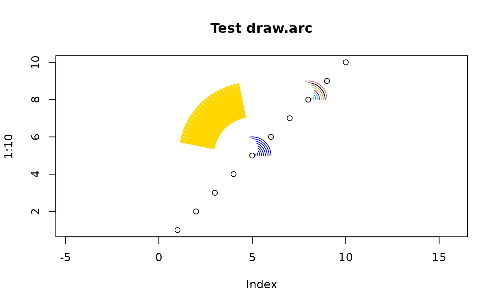
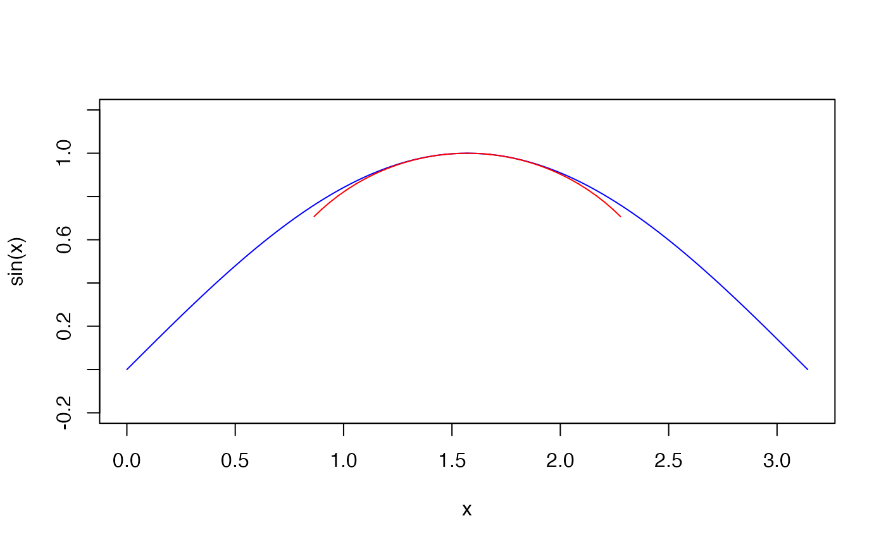

Draw arc
draw.arc.RdDraw one or more arcs using classic graphics.
Usage
draw.arc(x=1,y=NULL,radius=1,angle1=deg1*pi/180,angle2=deg2*pi/180,
deg1=0,deg2=45,n=0.05,col=NA,lwd=NA,...)Arguments
- x
x coordinate of center. Scalar or vector.
- y
y coordinate of center. Scalar or vector.
- radius
radius. Scalar or vector.
- angle1
Starting angle in radians. Scalar or vector.
- angle2
Ending angle in radians. Scalar or vector.
- deg1
Starting angle in degrees. Scalar or vector.
- deg2
Ending angle in degrees. Scalar or vector.
- n
Number of polygons to use to approximate the arc.
- col
Arc colors.
- lwd
Line width for the arc.
- ...
Other arguments passed to segments. Vectorization is not supported for these.
Details
Draws one or more arcs from angle1 to angle2.
If angle1 is numerically greater than angle2,
then the angles are swapped.
Be sure to use an aspect ratio of 1 as shown in the example to avoid distortion. For argument 'n' (which may be either a scalar or a vector, although most likely you will leave it at the default value), an integer value means to use that number of segments to approximate the arc, while a non-integer value means to use enough segments so that the angle that successive segments make with one another is no more than n radians.
Examples
plot(1:10, asp = 1,main="Test draw.arc")
draw.arc(5, 5, 1:10/10, deg2 = 1:10*10, col = "blue")
draw.arc(8, 8, 1:10/10, deg2 = 1:10*10, col = 1:10)
draw.arc(5, 5, 3, deg1=100, deg2=170, col="gold", lwd=50, lend=1)

# example taken from post by Hans Borcher:
# https://stat.ethz.ch/pipermail/r-help/2009-July/205728.html
# Note setting of aspect ratio to 1 first.
curve(sin(x), 0, pi, col="blue", asp=1)
draw.arc(pi/2, 0, 1, deg1=45, deg2=135, col="red")
